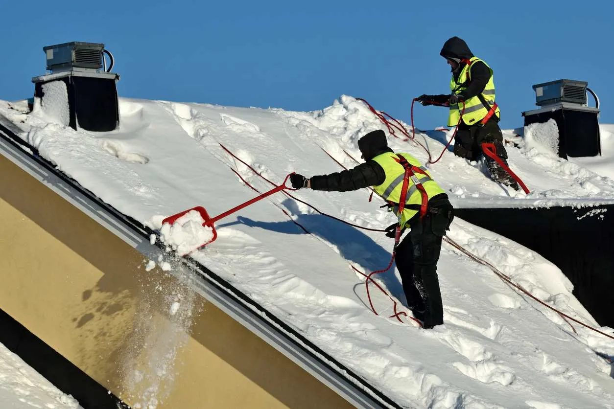
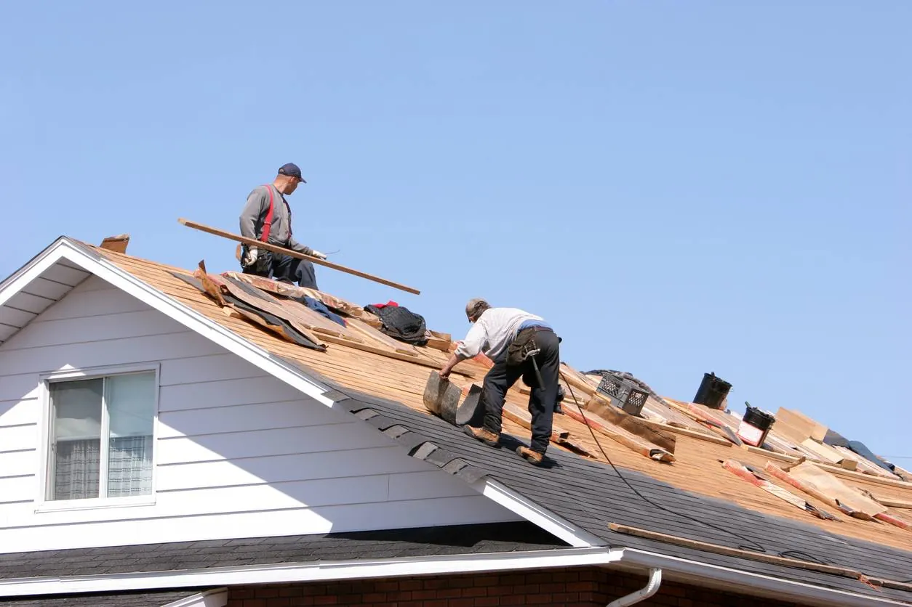

As a homeowner, you know that proper, regular maintenance is crucial to ensuring your home is as sturdy and beautiful as the day you bought it. This routine upkeep literally keeps a roof over your head.
But climate conditions are fairly diverse across the Beehive State, which means your home’s roof can last anywhere from one to three decades. Exactly how long a roof lasts in Utah varies between buildings and areas, but we outline what to expect in our detailed guide below.
How Long Does a Roof Last in Utah?
Due to a variety of factors—from material to climate—there’s no one-size-fits-all estimate for how long any given Utah roof will last. However, it’s helpful to keep these factors in mind to know what to expect when it comes to roof maintenance, repair, and replacement.
Roof Materials and Lifespans
The most common roofing materials used in residential construction include asphalt or fiberglass shingles, metal, and wood shingles or shakes. Additionally, modern materials such as synthetic shingles and energy-efficient reflective shingles have been gaining popularity. Review the estimated lifespan of each to determine how long your roof might last.
| Material | Lifespan | Best For | Strengths | Concerns | Maintenance Level |
|---|---|---|---|---|---|
| Asphalt/Fiberglass | 15–30 years | Homes in dry climates | Affordable, sturdy, lightweight, protects from UV rays and common weather patterns | Algae or mold can grow in humid climates | Low |
| Metal | 20–50 years | Homes in snowy regions, homes that experience extreme weather | Long-lasting, highly durable, fire-resistant, lots of color and style options | Damage from debris can be hard or impossible to fix, higher upfront cost | Low |
| Wood | 15–30 years | Homes that experience a mild climate and mild temperatures | Attractive, certain well-treated wood types are resistant to rot and insect damage, wind-resistant | Shingles can warp or split, causing further problems; can’t handle extreme temperatures | High |
| Energy Efficient Reflective Shingles | 20–30 years | Homes in sunny climates looking to reduce cooling costs | Reflect sunlight, reduce heat absorption, improve energy efficiency, extend roof lifespan in high-sun areas | May have a higher upfront cost; performance depends on proper installation | Low to Moderate |
| Modern Materials (Synthetic & Cool Roofs) | 30–50+ years | Homeowners wanting long-lasting, low-maintenance, energy-efficient solutions | Highly durable, lightweight, mimic natural materials, resist cracking and warping, reflect sunlight, regulate temperature | Can be more expensive initially; limited availability in some areas | Low |
Material Quality
As with many other purchases, you get what you pay for when choosing roofing materials. The durability of any material can be compromised if it has poor quality, ultimately affecting how many years a roof lasts.
If saving money is a priority, setting your sights ahead when making material choices is essential. High-quality materials last longer and require fewer repairs compared to lower-quality materials, so spending a bit more upfront can extend the overall lifespan of your roof and ultimately save you money in the long run.
Depending on who you hire to install or replace your roof, you may not have a choice in the quality of the material. It’s essential to look for reputable roofers who use durable, high-caliber supplies that give your roof the best chance at longevity.
Utah Climate Factors

Weather fluctuations considerably influence roof longevity, including:
- Average snowfall and moisture patterns in your area
- Annual freeze and thaw cycles
- The potential for high heat and harsh UV rays on the surface
- Seasonal and environmental stresses, such as large storms or heat waves
When water freezes and expands on top of your home, this can cause the roofing materials to expand as well. Intense radiation from the sun, particularly in the summer months, can cause these materials to deteriorate faster than in more moderate climates.
To better understand how climate conditions impact your home, consider the weather in your area. Do you live in a northern region with heavy snow or a southern area with hot, dry heat? Each impacts your roof differently.
Installation and Maintenance
Another aspect of how long a roof lasts on a Utah home comes down to the experience and skill of your roofing contractors. Experienced roofers take steps to ensure proper installation from the start, so you have less to worry about over time.
The quality of your installation ensures the correct placement of all your roof components to provide adequate protection from the elements. Inexperienced or hurried contractors can leave exposed points susceptible to everyday wear and tear.
How quickly you notice minor issues and hire a professional to resolve them can also extend your roof’s life expectancy. Taking care of any signs of damage can prevent minor issues from escalating into more significant ones.
Routine Maintenance Tips for Your Roof
Routine maintenance plays a significant role in determining how long roofs last. Regular upkeep not only prevents costly repairs but also helps homeowners reach the full 20–25-year lifespan expected from most roofing systems.
To help protect your roof and extend its longevity, follow these essential maintenance tips:
- Clear out gutters and downspouts to prevent water buildup and ice dams.
- Inspect your attic and ceilings for signs of leaks or moisture.
- Check for missing, cracked, or curling shingles and replace them promptly.
- Trim overhanging branches that can scrape shingles or drop debris.
- Schedule regular professional roof inspections.
How Often Should a Roof Be Inspected?
We recommend a full professional inspection at least once a year. Routine inspections help catch minor issues—such as cracked shingles, flashing damage, or soft spots—before they become major repairs. It’s also a good idea to schedule an inspection after severe weather, especially heavy snowfall or windstorms. Regular checkups can make a significant difference in how well your roof holds up over time and help you avoid unexpected problems in the future.
Architectural Design
There’s much more to your home’s architecture than interior square footage and exterior aesthetics. As a rule, a steeper roof pitch, or the angle at which it slopes, reduces the likelihood of debris and moisture remaining on its surface and weakening the shingles. Low-slope or flat roofs typically have poor drainage, making them more susceptible to damage caused by moisture buildup.
Additionally, storm winds are less likely to cause damage to high-pitched roofs. While shingled roofs are generally rated to withstand winds up to 90 mph, some regions in Utah have faced hurricane-force winds exceeding 100 mph. These intense winds have caused extensive damage to the shingles on flatter roofs of many homes throughout the state.
A well-ventilated attic can also significantly affect how long your roof lasts. Without proper ventilation, the buildup of heat in the attic can cause your roof to warp or deteriorate from the inside out. Adequate airflow allows your home to withstand Utah’s freeze and thaw cycles better, preventing moisture, mildew, or mold accumulation beneath the shingles.
Solar Panels and Roof Life
As more Utah homeowners invest in solar energy, it’s important to consider how solar panels interact with your roof. When installed correctly, solar panels can help protect the roofing material underneath by shielding it from direct sunlight, snow, and rain, potentially extending its lifespan.
However, the installation process must be done with care. Poorly installed panels can create holes or weak points that lead to leaks or structural issues. Always work with experienced professionals who understand how to mount solar panels without compromising the integrity of your roof.
Should You Repair or Replace Your Roof?
If you’ve noticed signs of roof damage, you’ll need to determine whether it can be repaired or requires a complete roof replacement. While you may need a professional inspection from a qualified roofing company, there are several questions to keep in mind as you consider repair or replacement.
How Often Should You Replace Roofing?
Monitoring your roof’s condition and age are two ways to tell when it needs to be replaced. Older roofs tend to require more repairs, so after 20–30 years, you’re likely better off with a full replacement.
Significant visible or functional damage may also indicate it’s time to replace the entire roof rather than continue to address individual weak spots one by one.
How Can You Tell If Your Roof Needs to Be Replaced?

- Noticeable leaks and water damage
- Shingles that are falling apart or missing entirely
- Obvious discoloration or deterioration
- Gaps and cracks that allow pests and debris inside
- Ceiling discoloration or damage inside your home
What Time of Year Is Best to Replace a Roof in Utah?
It typically takes three to five days to complete a roof replacement, depending on the size and type of materials used. If you need a new roof in Utah, it’s best to wait until the driest, most stable time of year: late spring or early summer.
High temperatures can cause the adhesive used to attach roof components to your home to dry out. At the same time, excessive precipitation can prolong the installation as contractors wait out the weather conditions.
How Many Times Can Shingles Be Replaced?
Provided there is no significant overall damage to your roof’s underlayment, there is no limit on how often its shingles can be replaced. However, frequent replacements can compromise the overall integrity of your roof if they are performed without proper inspection of the decking, plywood, and sheathing below.
It’s wise to reach out to your local roofing contractor to make sure they only employ proper, responsible roofing techniques, whether you replace shingles or re-roof your home entirely.
Contact American Roofing to Find Out How Long Your Roof Will Last in Utah
If you have questions on how long your roof will last, American Roofing Company has the answers. Our roofing contractors specialize in quality residential roofing inspection, repair, and replacement on homes of all sizes and styles. Contact us today to schedule a professional inspection.